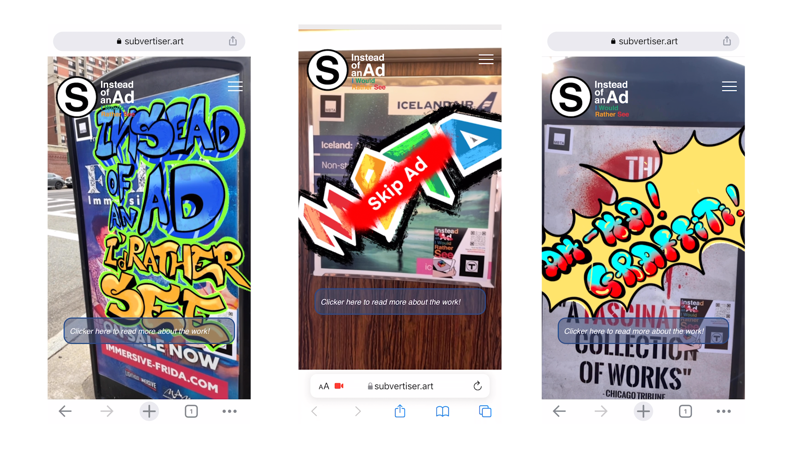
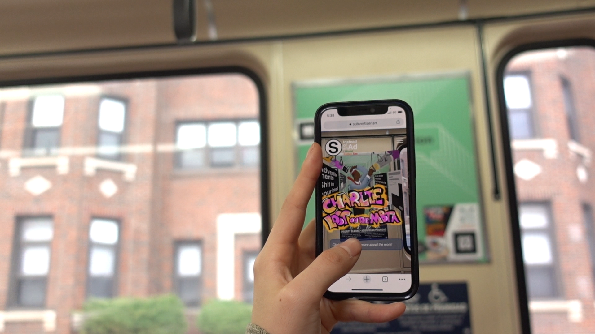

Section I. Artworks
As a spontaneous reaction from the grassroots, street art responds to the oppression under authoritative power and the normalization of discipline. Street art in Boston is mostly in the form of graffiti and stickers, which appear almost everywhere from the busiest transportation center Back Bay, to the west neighborhood village Allston, and to the south of Boston where more minority communities take root. I took photos of some of the graffiti artworks, and applied similar aesthetics to the artworks in the Subvertiser project with inspiration borrowed from those graffiti. The location information of the original graffiti also appears along the artworks on the visitors’ screens, so that they can go to the artwork’s page and read more about its background.

Furthermore, the tension between the authorities and street artists is interesting - usually, street art is considered as vandalism and always cleaned up or covered by paints if it appears in public spaces. By adopting Web AR technology, this project takes a detour but makes it possible for graffiti to appear on the MBTA’s properties. I hope that this whole process extends the spirits in street art culture: tactical, but not compromising.
Why is graffit inportant?
Section II. Technology
Web-based augmented reality is an emerging technology that started to be widely known from the 2020s. Compared to traditional AR technologies, Web AR has the advantage that no special applications are needed and it can run reasonably fast and smoothly on most browsers. This is a crucial benefit for this project, because the spontaneity of the browser-based AR greatly improves the user experience and makes the work more accessible. Instead of downloading an app, visitors are directly led to a webpage that requests using their cameras and renders AR content.
However, due to the immaturity of the technology, there are not many public resources for developing a Web AR program. In this project, I used an open source JavaScript library AR.js. The library has handy APIs which allow developers to use html tags for introducing AR content on a web page, but the features are limited and don’t entirely fit my needs. To increase its compatibility for this project, I combined AR.js with Three.js , a WebGL library for animated computer graphics.
Further implementation includes
- Tracking multiple markers at the same time and determining images/models' dimensions based on the distance between the markers.
- Smoothening the deformation of the artworks when the camera is moving/shaking;
- Improvements on the flickering issue using lerp
- Improvements on the stableness of marker detecting
Section III. Stickers on the Streets!
version #1
 version #2
version #2 version #3
version #3 final version
final versionDifferent versions of the sticker design. The stickers are designed to be deceptive to trick the MBTA staff so that they will stay on the ads as much as they can.
The T icon, with its black border, is used as a marker to be tracked by the user's camera (so it has to be big and clear). The QR code in the top right corner leads visitors to the website.
Section IV. Documentation Video
Section V. Participation
The Subvertiser project is in need of collective efforts from the local community! Like many similar artworks, Subvertiser provides a platform to showcase artworks, and it’s important to integrate local audiences’ voices and artists’ works into the project. Subvertiser is trying to do this by seeking inspiration from local street art. However, we can push this further by encouraging people to share their thoughts or works with Subvertiser, and showcase them through our AR platform.